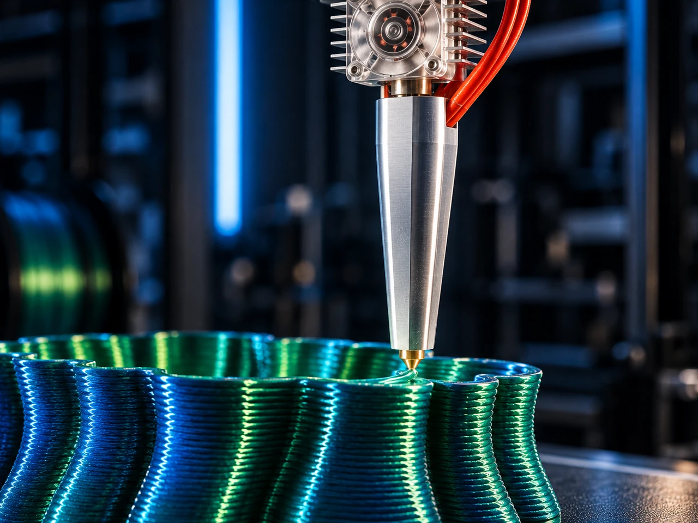
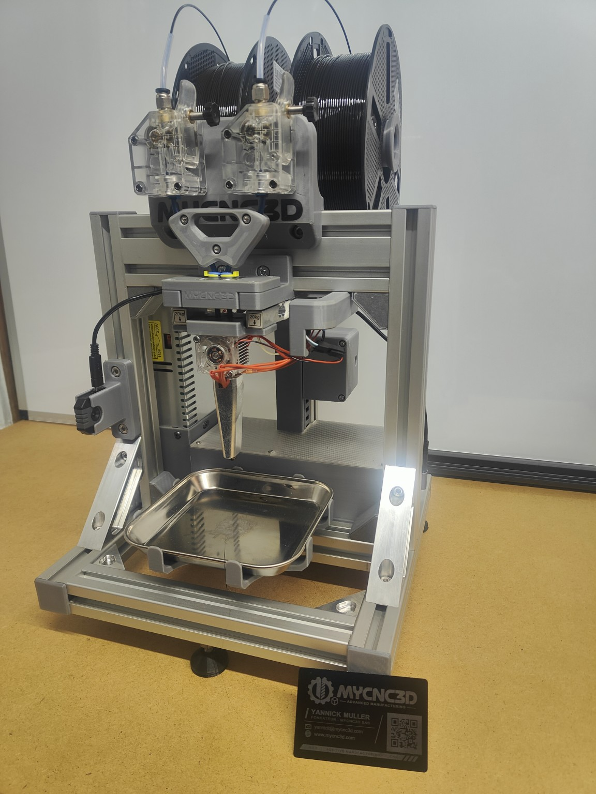
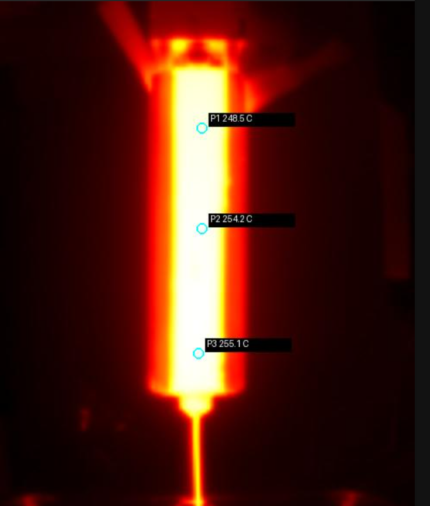
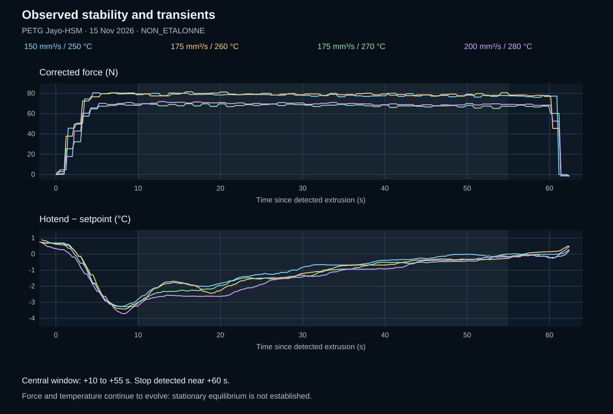

Thermal performance
Heating capacity, temperature distribution and stability as material flow increases.
Increasing material throughput while maintaining process control.
Development of high-performance polymer extrusion systems for substantially higher material flow rates, with a focus on thermal performance, extrusion force, flow stability and repeatable deposition.

Project overview
The project has progressed beyond initial concept design into active prototype development and experimental characterisation.
MYCNC3D is developing high-performance polymer extrusion systems intended to substantially increase material throughput while maintaining control over thermal behaviour, extrusion force, flow stability and deposition quality.
The research considers high-flow extrusion as a complete process-engineering problem. Increasing heater power or nozzle diameter alone is not sufficient: melting capacity, polymer residence time, extrusion mechanics, temperature stability and sustained material flow must operate together within a controlled process window.
Current work focuses on refining the extrusion architecture, instrumenting the process and establishing repeatable operating conditions.
The objective is not simply to achieve a high peak flow value, but to maintain elevated material throughput in a stable, measurable and repeatable manner.
Custom engineering services
MYCNC3D now offers design, prototyping and manufacturing services for custom hotends, extruders and extrusion components, subject to a feasibility study and an agreed quotation.
Each project starts with a review of your application, materials, machine interfaces and operating requirements. The scope of design, prototype manufacturing and testing is defined with you according to the feasibility of the project.
These custom services are distinct from the proprietary high-flow hotend currently under development. That hotend remains an R&D prototype and is not a validated series-production product.
Contact us with an overview of your requirements to discuss feasibility and request a quotation.
Why it matters
Material throughput is one of the principal limitations affecting FDM productivity. Increasing achievable flow can reduce manufacturing time, enable larger deposition geometries and make polymer extrusion more relevant for larger-scale and industrial applications.
Higher flow also increases the importance of melt quality, temperature stability, extrusion force and thermal management. MYCNC3D therefore treats extrusion performance as a process-control problem rather than a single maximum-flow metric.
Current focus
Heating capacity, temperature distribution and stability as material flow increases.
Relationships between extrusion geometry, residence time, polymer temperature and achievable throughput.
Mechanical force required to transport filament through the system under different operating conditions.
Sustained material flow, pressure behaviour and consistency over time rather than short-duration peak values.
Conversion of higher flow into stable and usable deposition without unacceptable loss of process control.
Instrumented test methods for comparing architectures and identifying thermal, mechanical and flow limitations.
Engineering approach
MYCNC3D develops the extrusion system through iterative prototyping and instrumented testing. Design changes are evaluated through measurable parameters such as material flow, extrusion force, temperature stability and deposition behaviour.
This approach progressively establishes the operating envelope of each extrusion architecture and connects extrusion performance with the broader MYCNC3D manufacturing platform.
Preliminary results


Apparent surface temperatures depend on emissivity, camera calibration and measurement conditions. They do not demonstrate the temperature of the polymer. No correspondence between this thermogram and any of the four CSV tests below has been confirmed.
Four instrumented PETG Jayo-HSM tests were recorded on 15 November 2026, using two 1.75 mm filaments, a declared 1.0 mm nozzle and a programmed duration of 60 s per test.
The flow rates below are gravimetric estimates obtained by fitting collected mass between 10 and 55 s after detected extrusion onset, using a declared density of 1.27 g/cm³. They are distinct from commanded flow rates. The exports are flagged NON_ETALONNE (uncalibrated): results are preliminary and their total measurement uncertainty has not been established.
Estimated flow : 150.8 mm³/s
Deviation from command : +0.56 %
Mean corrected force : 78.33 N
Estimated flow : 170.3 mm³/s
Deviation from command : -2.71 %
Mean corrected force : 79.11 N
Estimated flow : 176.6 mm³/s
Deviation from command : +0.89 %
Mean corrected force : 68.04 N
Estimated flow : 195.0 mm³/s
Deviation from command : -2.51 %
Mean corrected force : 69.79 N


Temperatures in the headings are setpoints. Forces are offset-corrected means over the same window. The 175 mm³/s tests show a lower mean force at 270 °C than at 260 °C; this observation is limited to these two runs. Thermal conditions differ and only one run is available per condition. These measurements do not establish repeatability, deposition quality or guaranteed industrial performance.
Current status
The project is in active prototype development and experimental characterisation. Current work focuses on refining the extrusion architecture, instrumenting the process and establishing repeatable operating conditions.
The system remains a research and development platform and is not currently presented as a commercial production product.
Next milestone
The next milestone is to establish a repeatable validation methodology covering sustained material flow, thermal stability, extrusion force and deposition quality across representative operating conditions.
Progress toward VALIDATION will require repeatable results, sustained rather than short-duration peak performance, controlled thermal behaviour and a clear correlation between measured extrusion conditions and resulting deposition quality.
Integrated platform
The long-term objective is to integrate material deposition performance with machine motion and manufacturing software rather than developing each technology independently.
Collaboration
MYCNC3D is open to discussions with industrial partners, material suppliers, component manufacturers, research organisations and technology providers working on advanced extrusion and additive manufacturing.